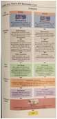

Chapter 12:
Congress
1.
The
Representatives and Senators
a.
The
Members
i.
435
Members of the House
ii.
100
Members of the Senate
iii.
Salary
of $174,000
iv.
Statistically
made up of White Men
b.
Why
Aren’t There More Women in Congress
i.
Women
occupy only 17% of Congress
ii.
Women
tend not to win party nominations
iii.
Women
are less incentivized to run as they have families and children to take care of
– less ambition.
2.
Congressional
Elections
a.
Who
Wins Elections?
i.
Incumbents
1.
Those
already holding office. In congressional elections, incumbents usually win.
ii.
Many
are career politicians and are fighting from day one for reelection
b.
The
Advantages of Incumbency
i.
People
often vote in the same person many times because they are familiar and if they
are doing a good job, the public doesn’t want to risk it on an unfamiliar
candidate
ii.
Advertising
1.
Incumbents
spend a lot of money on advertising and community outreach in order to keep a
positive public perception.
iii.
Credit
Claiming
1.
Casework
a.
Activities
of members of Congress that help constituents as individuals, particularly by
cutting through bureaucratic red tape to get people what they think they have
the right to get.
2.
Pork
barrel
a.
Federal
projects, grants, and contracts available to state and local governments,
businesses, colleges, and other institutions in a congressional district.
iv.
Position
taking
1.
Positions
candidates take affect the outcomes of an election.
v.
Weak
Opponents
1.
Incumbents
are far likely to face weak opponents, because incumbency scares off potential
running mates.
vi.
Campaign
Spending
1.
Challengers
have to raise large sums of money to beat an incumbent.
2.
The
candidate spending the most money usually wins.
c.
The
Role of Party Identification
i.
Most
citizens identify with a party, so a clear party identification by a candidate
may be enough to secure voters.
ii.
Gerrymandering
has created a system where districts are drawn so a certain party always wins
based on the demographics of voters.
d.
Defeating
Incumbents
i.
Challengers
are naïve about their chances of winning.
ii.
Incumbents
may loose supporters after a census where seats are reapportioned.
iii.
Changes
in public opinion can thrust incumbents out of office.
e.
Open
Seats
i.
When
an incumbent is not running for reelection, and the seat is open, there is
greater likelihood of competition
f.
Stability
and Change
i.
Incumbency
results in stability which allows members of Congress the ability to gain
expertise in dealing with complex issues
ii.
Some
people have proposed term limitations for members of Congress because of the
resistance of change.
3.
How
Congress is Organized to Make Policy
a.
American
Bicameralism
i.
Bicameral
legislature
1.
A
legislature divided into two houses. The US Congress and all state legislatures
except Nebraska’s are bicameral.
2.
Each
state is guaranteed two senators
3.
Representatives
are divided up based on population, but there casn never be more than 435.
ii.
The
House
1.
House
Rules Committee
a.
The
committee in the House of Representatives that reviews most bills coming from a
House committee before they go to the full House.
2.
Seniority
has power in the House and representatives are more likely to vote along party
lines.
iii.
The
Senate
1.
Senators
are nearly equal in power
2.
Less
disciplined and less centralized than the House
3.
Filibuster
a.
A
strategy unique to the Senate whereby opponents of a piece of legislation use
their right to unlimited debate to prevent the Senate from ever voting on a
bill. Sixty members present and voting can halt a filibuster.
b.
Congressional
Leadership
i.
The
House
1.
Speaker
of the House
a.
An
office mandated by the Constitution. The Speaker is chosen in practice by the
majority party, has both formal and informal powers, and is second in line to
succeed to the presidency should that office become vacant.
b.
Presides
over the House when it is in session
c.
Makes
committee assignments
d.
Appoints
legislative leaders and staff
e.
Controls
which bills get assigned to which committee.
2.
Majority
leader
a.
The
principal partisan ally of the Speaker of the House, or the party’s manager in
the Senate. The majority leader is responsible for scheduling bills,
influencing committee assignments, and rounding up votes in behalf of the
party’s legislative positions.
3.
Whips
a.
Party
leaders who work with the majority leader or minority leader to count votes
beforehand and lean on waverers whose votes are crucial to a bill favored by
the party.
4.
Minority
leader
a.
The
principal leader of the minority party in the House of Representatives or in
the Senate
ii.
The
Senate
1.
The
vice president is the president of the Senate
2.
Modern
vice presidents are active in representing the president’s views to the Senate.
iii.
Congressional
Leadership in Practice
1.
Party
leadership has been more effective in recent years leading to more policy
agreement within parties and more voting unity at the floor.
c.
The
Committees and Subcommittees
i.
Standing
committees
1.
Separate-matter
committees in each house of congress that handle bills in different policy
areas
ii.
Joint
committees
1.
Congressional
committees on a few subject-matter areas with membership drawn from both houses
iii.
Conference
committees
1.
Congressional
committees formed when the Senate and the House pass a particular bill in
different forms. Party leadership appoints members from each house to iron out
the differences and bring back a single bill.
iv.
Select
committees
1.
Congressional
committees appointed for a specific purpose, such as the Watergate
investigation
v.
The
Committees at Work: Legislation and Oversight
1.
Legislative
oversight
a.
Congress’s
monitoring of the bureaucracy and its administration of policy, performed
mainly through hearings.
vi.
Getting
on a Committee
1.
Experience
is key
2.
Members
with more connections to the majority leadership will land positions on more
committees.
vii.
Committee
Chairs and the Seniority System
1.
Committee
chairs
a.
The
most important influencers of the congressional agenda. They play dominant
roles in scheduling hearings, hiring staff, appointing subcommittees, and
managing committee bills when they are brought before the full house.
2.
Seniority
system
a.
A
simple rule for picking committee chairs, in effect until the 1970’s. The
member who had served on the committee the longest and whose party controlled
the chamber became chair, regardless of party loyalty, metal state, or
competence.
d.
Caucuses:
The informal Organization of Congress
i.
Caucus
1.
A
group of members of Congress sharing some interest or characteristic. Many are
composed of members from both parties and from both houses.
e.
Congressional
Staff
i.
Congress
hires staff to help fulfill all of their obligations
ii.
Personal
staff
1.
Staff
working directly for a congress member
2.
Average
House has 17 assistants
3.
Average
Senator has 40 assistants
4.
They
answer mail, communicate with voters, help solve problems, etc.
iii.
Committee
Staff
1.
Organize
hearings, research legislative options, draft reports, write legislation, etc.
iv.
Staff
Agencies
1.
Groups
that aid congress in research and proposals.
4.
The
Congressional Process
a.
Bills
i.
A
proposed law, drafted in legal language. Anyone can draft a bill, but only a
member of the House of Representatives or the Senate can formally submit a bill
for consideration.
b.
How
a Bill Becomes a Law?
i.

c.
Presidents
and Congress: Partners and Protagonists
i.
President
is the “chief legislator”
ii.
Presidents
can influence congress, but congress can have their own agenda separate from
the presidents.
iii.
Presidents
can exercise “veto” to stop legislation
d.
Party,
Constituency, and Ideology
i.
Presidents
come and go, parties endure.
ii.
Parties
and the constituency are more influential on domestic policies
iii.
Party
Influence
1.
Most
of the time members vote along party lines, however things like civil rights
issues have required both parties to form a coalition.
iv.
Polarized
Politics
1.
In
the past three decades’ republicans have become more conservative and democrats
have become more liberal.
2.
This
is likely because of gerrymandering at the district level
v.
Constituent
Opinion Versus Member Ideology
1.
The simplest
way for a constituent to influence politics is by electing someone who shares
the same viewpoints as them
2.
Campaign
contributions monetary or not can also influence the opinions of politicians.
3.
When
there are differences in opinion, congress still has control
e.
Lobbyists
and Interest Groups
i.
35,000
registered lobbyists
ii.
12,000
organizations
iii.
Everyone
is trying to influence the decisions of congress
iv.
There
is some evidence that lobbying pays off, but it is not as much as one might
think.
v.
There
are simply too many factors that decide how congressmen vote on an issue
5.
Understanding
Congress
a.
Congress
and Democracy
i.
In a
large nation, the success of democratic government depends on the quality of
representation.
ii.
Certainly
some aspects of congress are unrepresentative
iii.
Congress
does try to listen to the American people
iv.
Representativeness
Versus Effectiveness
1.
Some
argue that Congress is too representative and that they are constantly thinking
of small groups and defending them.
2.
They
argue that Congress should be an objective policymaking institution
b.
Congress
and the Scope of Democracy
i.
Congress
is responsible for many jobs in the US Government
ii.
Members
of Congress protect the interest of their constituents.
iii.
Congress
does not impose programs on a reluctant public; instead, it repsonds to the
public’s demands for them.